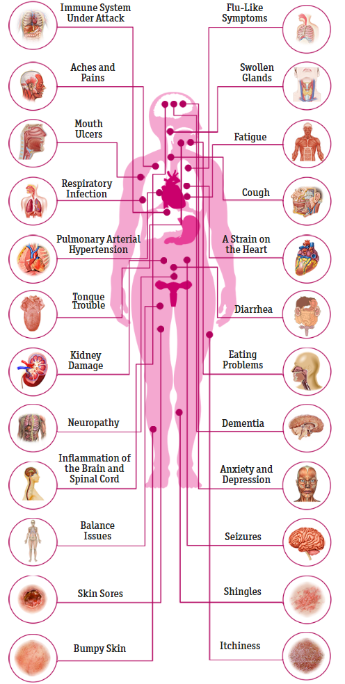

HIV-an is an nonprofit organization founded in Atlanta, GA with the focus on spreading awareness to individuals 13-17 years old about HIV by giving FREE tests to teens! We hope to broaden community knowledge about HIV, and so the community is prepared to take the next step. Our company is led by four founding chief officers, Kenneth Demmons, Jaiden Taylor, Malachi Traylor, and Caleb Outlar.
HIV:

Human Immunodeficiency virus, otherwise known as HIV, is a chronic, life threatening condition that damages the immune system, interfering with your body's ability to fight off other illnesses and diseases.
HIV targets the type of cells that would normally fight off an invader like HIV. As the virus replicates, it damages or destroys the infected CD4+ cell and produces more virus to infect more CD4+ cells. Without treatment, this cycle continues in most infected people until the immune system is badly compromised, leaving them open to many serious infections and illnesses. Many of the illnesses that people compromised immune systems get are rare in people with functioning immune systems.
How quickly the virus progresses varies from person to person. Factors like your age, overall health, and how quickly you’re diagnosed and treated can make a difference.
Acquired immunodeficiency syndrome (AIDS) is the final stage of HIV. At this stage, the immune system is severely weakened, and the risk of contracting opportunistic infections is much greater. Not everyone with HIV will go on to develop AIDS.
Importantly, many of the effects described here are related to the failure of the immune system in progressing HIV and AIDS. Many of these effects are preventable with early antiretroviral treatment, which can preserve the immune system. However, for anyone without access to effective antiretroviral treatment, these effects remain possible.
Immune System:
Your immune system prevents your body from acquiring the diseases and infections that come your way. White blood cells defend you against viruses, bacteria, and other organisms that can make you sick.
When HIV enters the body, it goes straight for the CD4+ T cells that are a lynchpin for the operation of the entire immune system. As the virus infects and kills more of these T cells, your immune system grows weaker, and you become more susceptible to illness.
Symptoms:
Early on, symptoms may be mild enough to be dismissed. Within a few months of becoming infected, most people experience a flu-like sickness that lasts a few weeks. Symptoms may include:
fever
chills
night sweats
diarrhea
headache
muscle aches
joint pain
sore throat
rash
swollen lymph glands
mouth or genital ulcers
Stages:
The first stage of HIV is called the acute infection stage. The virus reproduces rapidly at this stage. You may not have much in the way of serious symptoms, but there are usually large quantities of virus in your blood.
Many people are unaware of their status at this point, but the risk of transmission during the acute infection stage is very high. Acute infection may cause flu-like symptoms, including decreased appetite, headache, night sweats, and others.
The next stage is called the clinical latent infection state. On average, it lasts 8 to 10 years. In some cases, it lasts much longer than that. You may or may not have symptoms during this stage.
As the virus advances, CD4 count decreases more drastically. This can lead to symptoms like:
fatigue
shortness of breath
cough
fever
swollen lymph nodes
weight loss
diarrhea
If HIV infection advances to AIDS, the body becomes prone to opportunistic infections. People with advanced HIV/AIDS are at increased risk of a number of infections, including a herpes virus called cytomegalovirus. It can cause problems with your eyes, lungs, and digestive tract.
Kaposi’s sarcoma, another possible infection, is a cancer of the blood vessel walls. It’s rare among the general population, but common in people who are HIV-positive. Symptoms include red or dark purple lesions on the mouth and skin. It can also cause problems in the lungs, digestive tract, and other internal organs.
HIV/AIDS also puts you at higher risk of developing lymphomas. An early sign of lymphoma is swollen lymph nodes.
Respiratory and Cardiovascular Systems
respiratory infectionHIV increases the risk of colds, influenza, and pneumonias. According to the American Lung Association, HIV/AIDS can lead to opportunistic lung diseases. Without preventive treatment, people with advanced HIV are susceptible to tuberculosis, pneumonia, and a disease called pneumocystis carinii pneumonia (PCP). PCP causes trouble breathing, cough, and fever.
HIV raises the risk of pulmonary arterial hypertension (PAH). PAH s a type of high blood pressure in the arteries that supply the lungs. It puts added strain on the heart.
If you have HIV and have become immunocompromised (have a low T cell count), you’re susceptible to tuberculosis (TB), a leading cause of death in people who have AIDS. TB is an airborne bacterium that affects the lungs. Symptoms include chest pain and a bad cough that may contain blood or phlegm. Symptoms can linger for months.